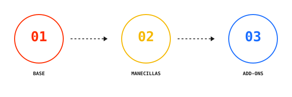
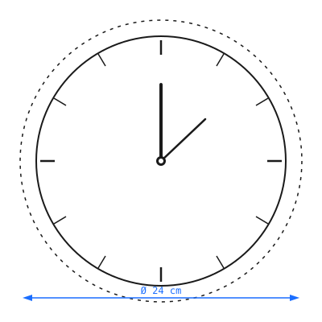
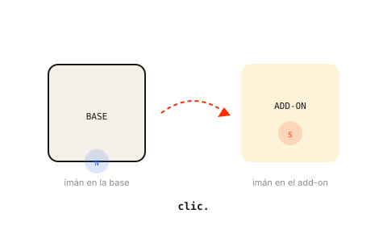

si no te gusta perder el tiempo, encuéntralo aquí →
It's
time
for
nada.
Divertirse
no
necesita
justificación.
Vivimos convencidos de que el tiempo libre tiene que ser productivo. Que si no aprendemos algo, creamos algo o avanzamos algo, lo hemos malgastado. Mentira.
Haz cosas
inútiles.
Hazlas bien.
It's fun
o'clock.
Un reloj que recuerda que el tiempo también puede usarse para no hacer absolutamente nada de provecho.
Tres capas de personalización. Infinitas combinaciones. Cada pieza se imprime en 3D en PLA+ y encaja con un sistema de imanes.


La base y las manecillas se imprimen en PLA+, un bioplástico resistente y ligero derivado del almidón de maíz.
El mecanismo es estándar quartz de 1 pila AA, silencioso y con una autonomía de más de un año.

Los 12 marcadores de hora se sujetan mediante imanes integrados en la base y en cada add-on.
Cambia el estilo en segundos. Mezcla y combina como quieras.